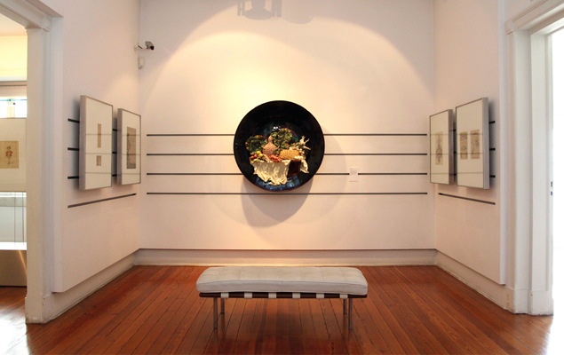
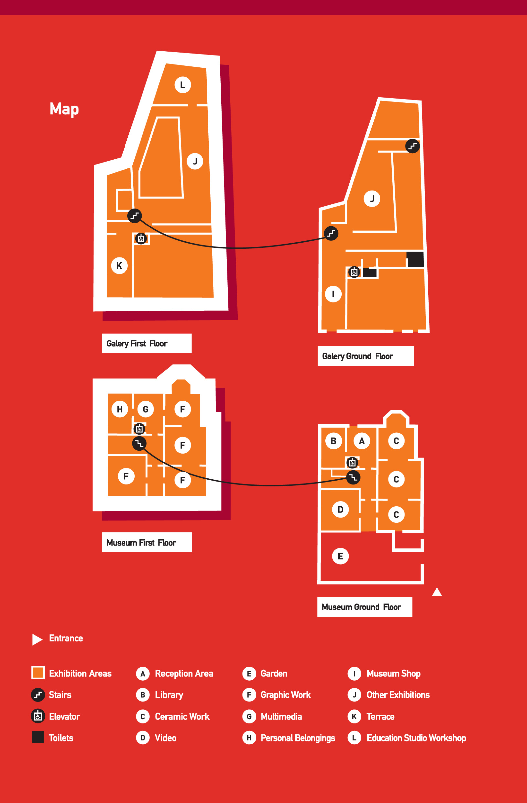

HORÁRIO
Terça a Domingo das 10:00 às 18:00
Encerra à segunda-feira e nos dias 1 de maio, 24, 25 e 31 de dezembro e 1 de janeiro.
Preço de Entrada: 3,00€

PERMAMENTE
PISO 0
Galeria de Retratos de Bordalo Pinheiro, desde 1863 até 1904 (do mais antigo ao mais recente retrato do artista). Pequena mostra feita a partir de uma selecção da colecção que integra mais de 900 provas de fotografias de época, do artista, família e amigos, entre outros temas.
Filme de cerca de 10 minutos, com passagem em ciclo contínuo, realizado por Miguel Ceitil sob a coordenação de Fernando Lopes, a partir de imagens de arquivo seleccionadas com base num guião inédito concebido por Raquel Henriques da Silva.
Este filme complementa a exposição permanente, constituíndo simultaneamente uma introdução ao programa expositivo e um ensaio sobre o tempo inédito em que Rafael Bordalo Pinheiro viveu, contextualizando a sua obra
Obra Cerâmica:
Três salas dedicadas à produção cerâmica da Fábrica de Faianças das Caldas da Rainha fundada por Bordalo Pinheiro em 1884. Dotado dos mais avançados meios técnicos trazidos de Inglaterra, França e Bélgica, com uma produção inspirada nas práticas das "arts and crafts", aliava à revitalização da tradição cerâmica caldense, a produção de cerâmica de autor.
Nesta primeira exposição que inicia o ciclo de rotatividade desta colecção, privilegiaram-se as temáticas do Humor Social e da Crítica Política, o Naturalismo e o Historicismo, seleccionando peças únicas e outras de produção em série, com destaque para a Talha Manuelina de 1893, uma das peças de maiores dimensões; a figura exótica de um Negro, peça adquirida recentemente e que se expõe pela primeira vez; pratos naturezas-mortas ou as figuras de movimento ou engonço relacionadas com o universo popular.
Biblioteca:
Na Biblioteca, preservada na sua originalidade, foi recuperado o mobiliário que data da década de 1940 e disponibilizados postos de consulta digital dos acervos, com o objectivo de preservar as espécies mais antigas. Com mais de 3000 publicações que complementam e informam a obra de Bordalo, tem vindo a ser enriquecida com novas aquisições.

PISO 1
Em destaque o notável retrato de Rafael Bordalo Pinheiro, pintado pelo irmão Columbano (óleo s/tela, 1891).
Obra gráfica:
Distribuída por três núcleos onde se expõe pintura, desenho litografia e gravura.
– Núcleo dedicado à Auto representação: São inúmeras as auto representações de Bordalo, cheias de humor e ironia, documentando quer episódios da vida pessoal, quer profissional, ou acontecimentos diversos.
Mostra-se aqui, pela primeira vez, uma pequena selecção que começa com um dos desenhos a lápis mais antigos (1865) (Foto) e termina com uma das suas últimas auto caricaturas datada dos finais de 1904.
– Núcleo Zé Povinho sempre o mesmo! Um percurso sobre a representação desta genial criação de Bordalo, símbolo do povo português, desde o primeiro desenho original a tinta da China, publicado na Lanterna Mágica em 1875 (peça pela primeira vez exposta ao público) passando pela única imagem de um "Zé Júnior", pelo "O Soberano" (do Álbum das Glórias), até às imagens d’ AParódia.
- Núcleo BORDALO À MESA:
Esta nova mostra insere-se no âmbito do programa de rotatividade expositiva formulado no programa museológico da reabertura do Museu e ambiciona dar a conhecer as vastas colecções que integram o seu espólio.
A mostrar será distribuída por três salas, um percurso temático que pretende explorar a gastronomia, através da obra bordaliana, nas suas diversas manifestações artísticas.
Aqui a obra multifacetada de Bordalo Pinheiro espelha o gosto por estar à mesa e apreciar a boa gastronomia. Mas também regista a dieta alimentar, a culinária, os espaços de consumo e a etiqueta à mesa, do último quartel de Oitocentos.
Quiosques multimédia:
Complementam e documentam as obras expostas com remissivas para informação mais desenvolvida e de contexto.
Sala Multimédia:
Disponível uma Cronologia sobre a Vida e Obra de Bordalo; a História do Museu; e no capítulo As Colecções, referência, na obra cerâmica, aos azulejos, e na obra gráfica aos Jornais e publicações, 1ª BD publicada em Portugal (Apontamentos.sobre a Picaresca Viagem do Imperador.Rasilb pela Europa, 1872) e ao trabalho de ilustração e design.
Sala Testemunhos:
Mantendo uma tradição que remonta aos primeiros tempos do Museu, expõem-se, neste espaço, um conjunto de objectos pessoais que nos reportam ao universo biográfico de Bordalo Pinheiro: a sua última caixa de aguarelas, a caneta com que desenhou O António Maria, a bata para modelação cerâmica, as espátulas, o anel e o seu monóculo, as peças cerâmicas que dedicou á família.
TEMPORÁRIA
A obra de Rafael Bordalo Pinheiro tornou-o numa referência no contexto cultural, artístico e social da segunda metade do século XIX. Apesar de apresentar uma obra muito diversificada, que abrange o desenho, o grafismo, a pintura e a cerâmica, o artista notabilizou-se como caricaturista. Foi essencialmente neste domínio que desempenhou um importante papel enquanto crítico de uma sociedade contemporânea repleta de contradições e ambiguidades. Assim, a sua obra reflecte de forma crítica o quotidiano cultural, político e social da época em que viveu. Uma das suas obras mais emblemáticas é a figura humorística Zé Povinho, que hoje em dia se encontra fortemente enraizada no imaginário português.